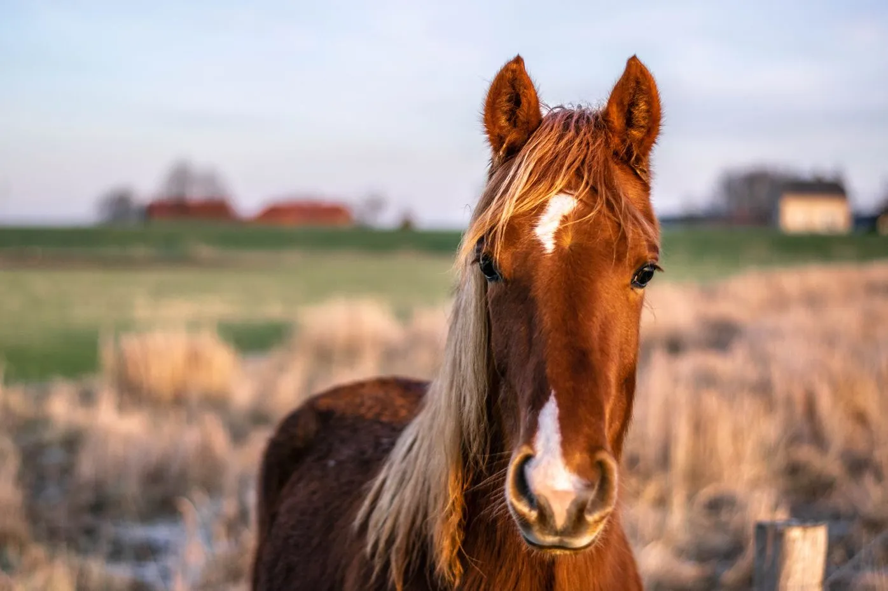
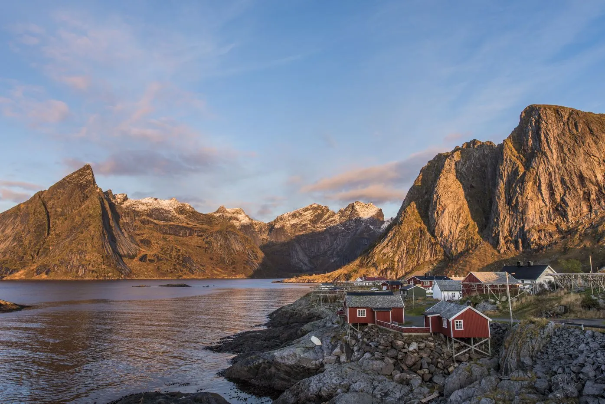
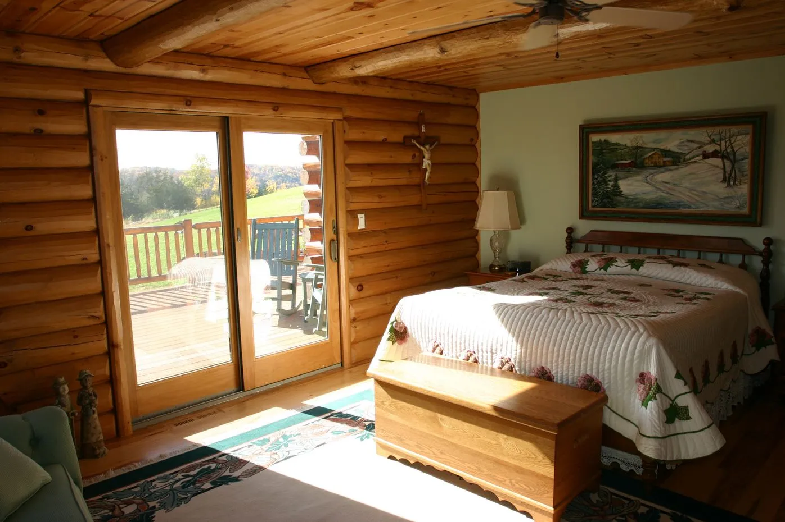
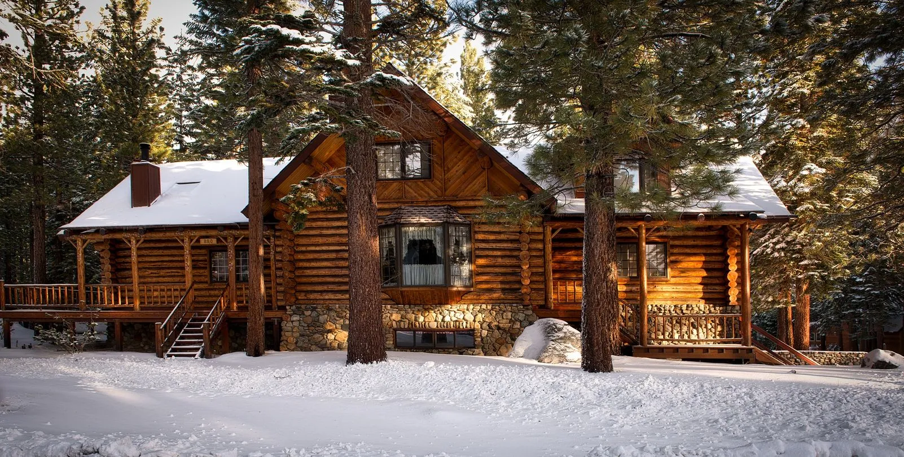
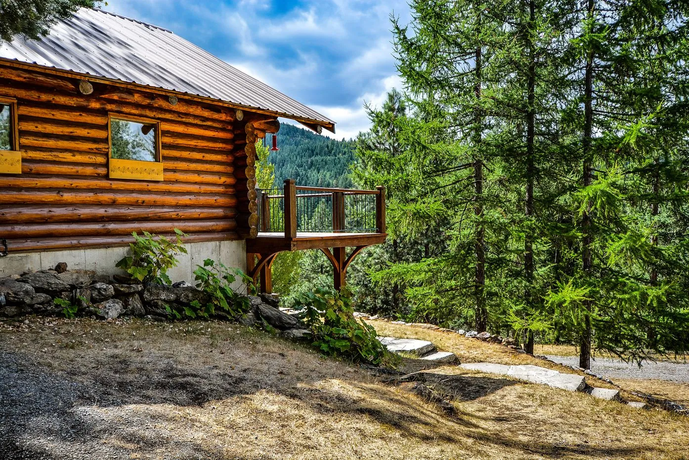
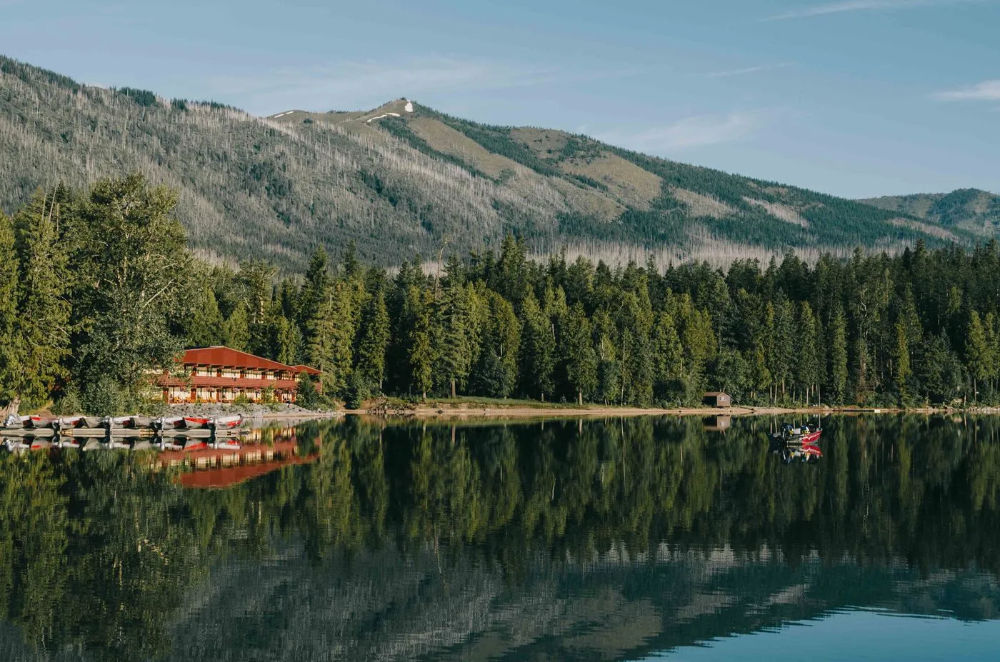

<section class="about_pictures_annotation_block">
  <div class="container">
    <div class="about_text_for_title">
      <p class="about_title_pictures"> We have a children's playground with a number of swings and slides. Our spacious
        terrain is for you to relax in the outdoors.
        You don't need to take food with you, as we offer a shop with the freshest local produce including bakery and
        butchery.
        Our cafe is open 7 days a week from 9:30 for our famous free breakfasts, and a diverse menu of lunches.
        Additionally,
        we offer a variety of cabins for you to choose from. Here are some of them:
      </p>
    </div>
    <section class="about_pictures_block">
      <article class="about_picture_text">
        
        <h2 class="about_title_for_pictures">Horse Ranch Cottage</h2>
        <p class="about_text_under_pictures">
          This private cottage is located within the Horse Ranch with a spacious fenced area.
          Explore a lot of tree-lined trails, see ranch animals and spectacular views.
        </p>
      </article>
      <article class="about_picture_text">
        
        <h2 class="about_title_for_pictures">Tuolumne Meadows Lodge</h2>
        <p class="about_text_under_pictures">
          The Tuolumne Meadows Lodge offers 70 canvas-tent cabins for you to rent June to late August.
          This can be your best place to rest after an exhausting backpacking trip.
        </p></article>
      <article class="about_picture_text">
        
        <h2 class="about_title_for_pictures">Sunrise Vacation Rental</h2>
        <p class="about_text_under_pictures">
          This beautiful holiday home is waiting for you to stay in.
          This bright, clean, and modern home is located 29 miles from Yosemite National Park.
          It has new beds and furniture.
        </p>
      </article>
      <article class="about_picture_text">
        
        <h2 class="about_title_for_pictures">Donya Marie's Cottage</h2>
        <p class="about_text_under_pictures">
          Surrounded by pine trees of the Sierra Foothills, 40 minutes from Yosemite,
          this modern country cottage is the ideal place to stay in and enjoy the nature around you.
        </p>
      </article>
      <article class="about_picture_text">
        
        <h2 class="about_title_for_pictures">Sierra Meadow Cottage</h2>
        <p class="about_text_under_pictures">
          Rent this cabin, located not far from Yosemite National Park, breathe the pure mountain air,
          drink the cleanest water, and enjoy thrilling sunset/sunrise views from the terrace.
        </p>
      </article>
      <article class="about_picture_text">
        
        <h2 class="about_title_for_pictures">Yosemite’s River House</h2>
        <p class="about_text_under_pictures">
          The Yosemite’s River House offers a breathtaking view of the Merced River.
          This spectacular place will surely make you come back. Rent and enjoy your stay!
        </p>
      </article>
    </section>
  </div>
</section>